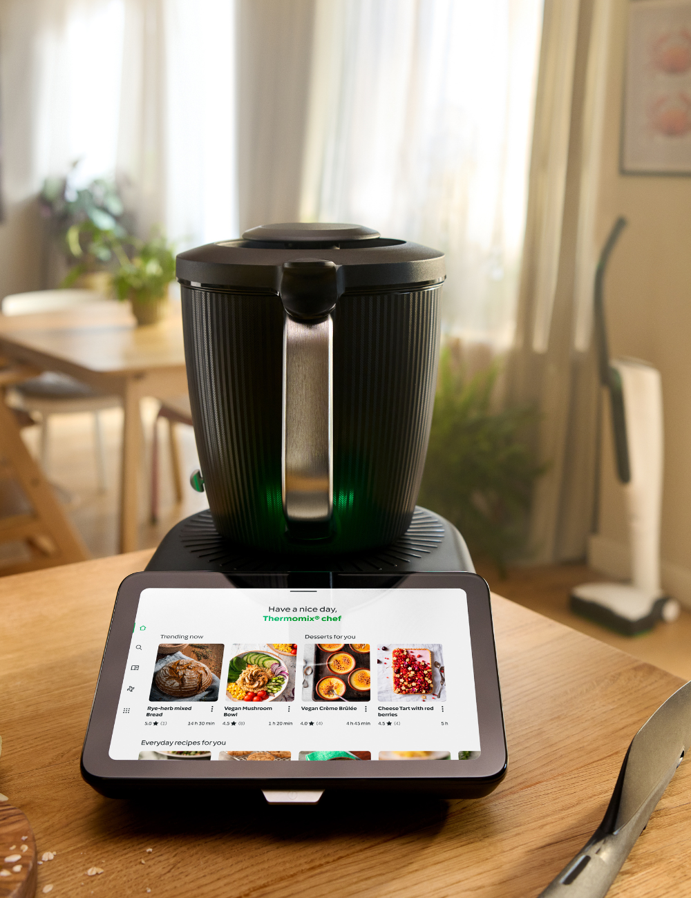
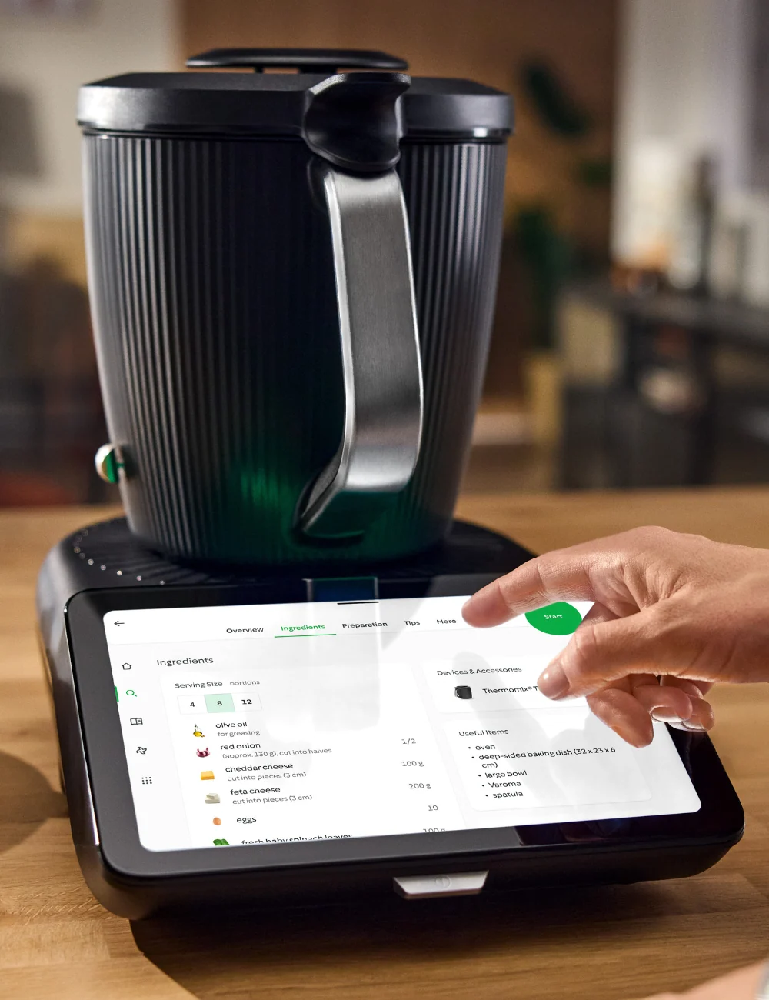
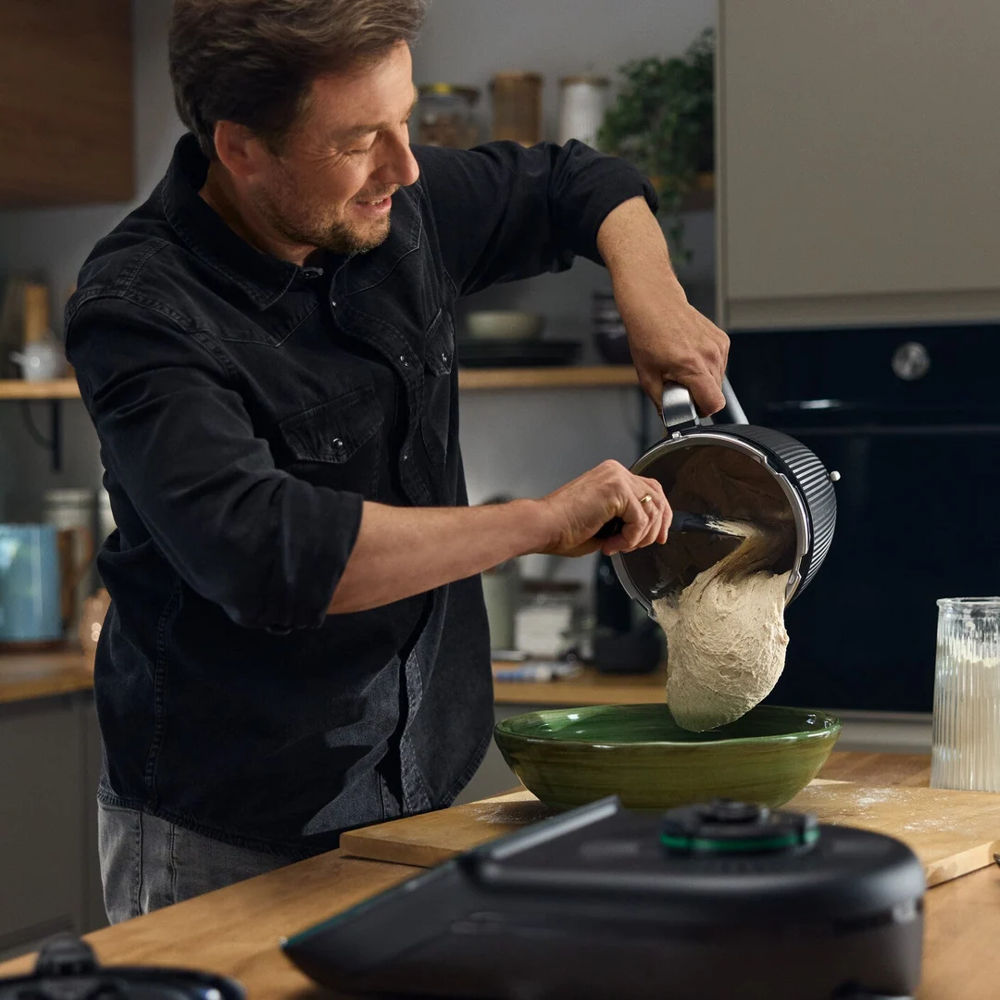
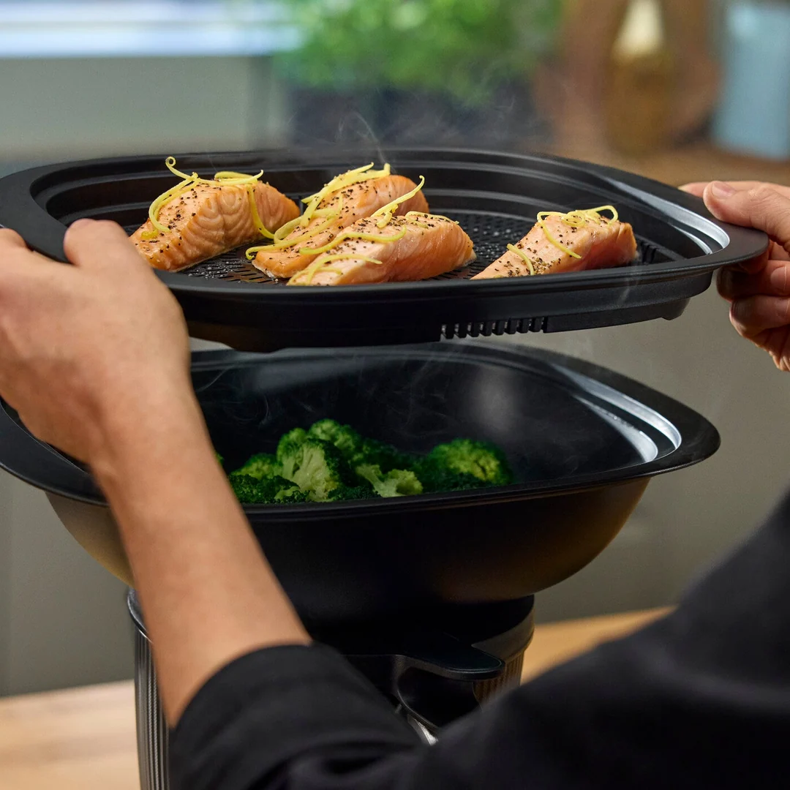

Mutfakta mühendislik hassasiyeti: Birebir Thermomix danışmanlığı, online/yüz yüze demo seansları ve satış sonrası kesintisiz tarif mentörlüğü.

Yetkili Danışman
Thermomix sadece bir cihaz değil, mutfağınızın yeni işletim sistemidir. Doğru rehberlikle tam kapasite kullanın.
Satın almadan önce mutfağınızda veya online bağlantı ile tüm fonksiyonları canlı inceleyin, sorularınıza anında yanıt alın.
100.000'den fazla rehberli tarifi ve haftalık menü planlamasını yaşam tarzınıza göre özelleştirmeniz için rehberlik ediyoruz.
Cihaz tesliminden sonra kurulum, püf noktalar ve özel teknik destek süreçlerinde doğrudan kişisel danışmanınız yanınızda.

En karmaşık lezzetleri bile ekrandaki tartım ve süre talimatlarıyla hatasız hazırlayın.

Geleneksel fırıncı ustası kıvamında ekşi mayalı ekmekler ve özel hamur işleri dakikalar içinde.

Besin değerlerini kaybetmeden aynı anda sebze, balık ve garnitürleri senkronize pişirin.
Kampanyalar, resmi garanti avantajları ve ücretsiz canlı demo için yetkili danışman hattımızla 7/24 iletişime geçebilirsiniz.